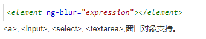
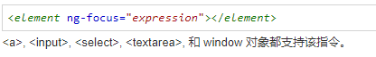
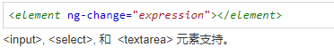
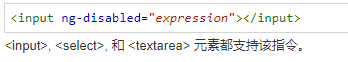

目录
1.背景介绍
2.知识剖析
3.常见问题
4.解决方案
5.编码实战
6.扩展思考
7.参考文献
8.更多讨论
AngularJS 表单是输入控件的集合，包含了HTML控件：input\select\button\textarea和HTML表单，通过使用 ng-model来对数据进行绑定
通常表单验证中大多是输入验证，即对input内容的验证，使用$dierty\$valid\$invalid\$pristine属性来验证 输入内容。今天则讲常用指令ng-blur、ng-change、ng-focus、ng-disabled是如何运用到表单验证中的。
ng-blur
ng-blur
定义用法：
当输入框失去焦点时执行表达式 ng-blur 指令不会覆盖原生的 onblur 事件， 如果触发该事件，ng-blur 表达式与原生的 onblur 事件都会执行。
语法：

ng-focus
ng-focus
定义用法:
当输入框获取焦点时执行表达式 ng-focus 指令不会覆盖元素的原始 onfocus 事件, 事件触发时，ng-focus 表达式与原始的 onfocus 事件将都会执行。
语法

ng-change
ng-change
定义用法：
当输入框的值改变时执行函数 ng-change 指令需要搭配 ng-model 指令使用。 ng-change指令不会覆盖原生的 onchange 事件, 如果触发该事件，ng-change
表达式与原生的 onchange 事件都会执行。 ng-change 事件在值的每次改变时触发，它不需要等待一个完成的修改过程，或等待失去焦点的动作。 ng-change 事件只针对输入框值的真实修改，而不是通过
JavaScript 来修改。
语法

ng-disabled
ng-disabled
定义用法：
禁用或启用输入框 ng-disabled 指令设置表单输入字段的 disabled 属性(input, select, 或 textarea)。 如果 ng-disabled 中的表达式返回
true 则表单字段将被禁用。
语法：

常用指令ng-blur、ng-change、ng-focus、ng-disabled是如何运用到表单验证中的？
1.ng-blur 输入框失去焦点时执行函数，一般用在表单中的注册功能，如用户名重名提示信息显示
2.ng-focus 输入框获取焦点时执行表达式。可用在显示提醒事项。
3.ng-change 则可用于需要随时验证的表单数据，如设置密码输入两次的时候。
4.ng-disable 可用于表单输入不合法时，提交按钮则不可按的状态
感谢大家观看
感谢深圳-叶泽彪师兄
by 孟晨